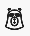

Extend Pronto with Agentforce Vibes
Learn how to use Agentforce Vibes within Salesforce to build and deploy Apex actions for your Pronto agent using natural language
Workshop Overview
In this workshop, you'll learn how to use Agentforce Vibes — Salesforce's enterprise-grade AI-powered development environment — to extend your Pronto agent with custom Apex actions. You'll work directly within your Salesforce org to build, deploy, and test new agent capabilities using natural language prompts.
What You'll Learn
- How to launch and configure Agentforce Vibes within your Salesforce org
- How to use natural language to generate production-ready Apex code
- How to deploy and test Apex actions for Agentforce agents
- How to create and configure subagents within your Pronto agent
- How to integrate custom actions into subagents
What You'll Build
A complete Loyalty feature for your Pronto agent:
- Loyalty Subagent — A dedicated subagent with a custom action to retrieve customer loyalty points
- LoyaltyPointsAction — An Apex class that simulates looking up customer loyalty points
Duration
~45 minutes
Level
Intermediate
Prerequisites
Before starting this workshop, ensure you have:
- Salesforce Org Access — A Salesforce org with Agentforce enabled
- Pronto Agent — A configured Pronto agent (complete the core Agentforce Builder Workshop first)
- System Permissions — Ability to create and deploy Apex classes, create subagents, and modify Agentforce agents
Launch Agentforce Vibes
What is Agentforce Vibes?
Agentforce Vibes is Salesforce's enterprise-grade AI-powered development environment. Unlike basic code assistants that generate snippets, Vibes understands your org's metadata, follows established patterns, and works as an autonomous coding partner that can plan, build, test, and deploy through natural language interaction.
Access Vibes in Your Salesforce Org
- Log in to your Salesforce org at login.salesforce.com
- From Setup, enter Agentforce Vibes in the Quick Find box
- Click Agentforce Vibes to open the IDE interface

- Accept the terms and conditions if this is your first time launching Vibes
- Wait for Vibes to initialize — it will automatically create a Salesforce DX project connected to your org

Verify Your Environment
Once Vibes loads, you'll see a VS Code-compatible interface. Take a moment to familiarize yourself with the key areas:
- Activity Bar (left) — Contains icons for Explorer, Search, Source Control, and Extensions

- Org Browser — Shows your connected org and metadata (cloud icon in Activity Bar)

- Agentforce Chat — The AI assistant panel on the right side
- Terminal — Accessible at the bottom for running CLI commands
- Status Bar — Shows your org connection status at the bottom
Verify your environment is ready:
- ✓ The Org Browser shows your connected org name
- ✓ The Agentforce chat panel is visible on the right
- ✓ The terminal is accessible at the bottom
- ✓ You can see your org's metadata in the Explorer
Configure Your Salesforce Project
Before building with Vibes, you need to enable key features in your Salesforce org and configure your development environment. This ensures Vibes can communicate with your org and access the right metadata.
Enable MCP Service (Beta)
MCP (Model Context Protocol) allows Vibes to connect to your Salesforce org using a standardized AI protocol.
- In your Salesforce org, navigate to Setup
- In the Quick Find box, search for "User Interface"
- Click User Interface in the results
- Scroll down and check the box for "Enable MCP Service (Beta)"
- Click Save
Activate Salesforce MCP Servers
MCP Servers provide specific capabilities to Vibes, like reading objects or accessing Salesforce APIs.
- In Setup, search for "MCP Servers" in Quick Find
- Click MCP Servers
- Under the Salesforce Servers tab, you'll see available servers
- Activate these two servers by clicking the toggle or checkbox:
- sobject-all — Provides access to all standard and custom objects
- salesforce-api-context — Provides Salesforce API context and metadata
- Verify both servers show as "Active" or "Enabled"
Configure MCP Servers in Vibes
Now that MCP is enabled in your org, configure it within the Agentforce Vibes interface.
- In the Agentforce Vibes window, look for the Agentforce Vibes Sidebar (usually on the left)
- Click Manage MCP Servers or find the MCP Server management section
- You should see a list of available MCP servers
- Toggle on or activate all three servers:
- sobject-all
- salesforce-api-context
- Any additional Salesforce-related servers shown
- Click the configuration icon (gear or settings) next to each server to verify available tools
Open the Agentforce Chat Panel
With MCP configured, you're ready to start interacting with Vibes. Let's open the AI chat interface where you'll give instructions.
Locating the Agentforce Chat Interface
The Agentforce chat is your AI assistant within Vibes. Here's how to find it:
Find the Agentforce Vibes Icon
Look for this icon in the Activity Bar on the left side of your Vibes window:

Click this icon to open the Agentforce chat panel
The Vibes icon is located at the top of the Activity Bar (left sidebar). Clicking it opens the chat panel where you'll type your prompts.
- Click the Vibes icon shown above to open the chat panel
- Type your prompts in the input box at the bottom that says "Type a message..."
- Send your prompt by pressing Enter or clicking the send arrow (→)
Give Vibes a Complete Plan
Instead of giving Vibes individual prompts for each step, you can provide a comprehensive plan that covers the entire workshop. This lets Vibes understand the full context and execute all steps efficiently.
In the Agentforce chat input box at the bottom of the chat panel, copy and paste this complete plan:
I need to create a Loyalty subagent for my Pronto agent with a custom Apex action. Please create a plan for:
1. Pull metadata from my org:
- Pronto_Service_Agent configuration (retrieve the complete agent definition)
2. Create LoyaltyPointsAction Apex class:
- Invocable from Agentforce (@InvocableMethod)
- Input: customer email (String)
- Return: random number of loyalty points between 100 and 10000 (Integer)
- Label the invocable method as "Get Loyalty Points"
- Include detailed description for Agent Builder
- Create test class with 100% coverage
3. Deploy LoyaltyPointsAction to my org with test execution
4. Update Pronto_Service_Agent metadata to add Loyalty subagent:
- Modify the agent metadata file to include a new subagent section
- Subagent Name: Loyalty
- Subagent Description: "Specializes in customer loyalty program inquiries, including points balance lookups, rewards information, and program benefits. Routes queries about loyalty points, rewards redemption, and membership tiers."
- Subagent Instructions: "You help customers with loyalty program questions. When a customer asks about their loyalty points balance, use the Get Loyalty Points action. Ask for their email address if they haven't provided it. Program details: Customers earn 1 point per dollar spent, 100 points = $1 off future orders. Be friendly and enthusiastic about helping customers with their rewards."
- Reference the Get Loyalty Points action in the subagent configuration
5. Deploy the updated Pronto_Service_Agent metadata back to my org
Please create a plan first, then I'll review it before you proceed.- Better Context: Vibes understands the full scope and can make better architectural decisions
- Fewer Prompts: One comprehensive prompt instead of multiple back-and-forth exchanges
- Consistent Code: Vibes sees both Apex classes together and can ensure consistency
- You Stay in Control: Vibes creates a plan first, you review and approve before execution
Use the Plan Feature
Now that you've pasted the complete plan, use Vibes' Plan feature to organize the work:
- Click the "Plan" button in the chat interface (or press the keyboard shortcut if available)
- Wait for Vibes to analyze your plan — Vibes will break down the steps, identify dependencies, and create a structured execution plan
- Review the plan that Vibes creates:
- Check that Vibes understood all requirements
- Verify the order of operations makes sense
- Confirm the Apex class specifications match your needs
- Click the "Act" button to execute the plan — Vibes will now:
- Pull Pronto agent metadata from your org
- Generate the LoyaltyPointsAction Apex class and test
- Deploy LoyaltyPointsAction to your org with test execution
- Update the Pronto agent metadata to include the Loyalty subagent
- Deploy the updated agent configuration back to your org
- ✓ Retrieved Pronto agent metadata from your org
- ✓ Generated LoyaltyPointsAction Apex class with test coverage
- ✓ Deployed the LoyaltyPointsAction to your Salesforce org
- ✓ Added the Loyalty subagent to your Pronto agent metadata
- ✓ Deployed the updated Pronto agent configuration with the new subagent
Your Loyalty subagent is now live and ready to test!
Verify the Loyalty Subagent
Check the Agent Configuration
Let's verify that Vibes successfully created the Loyalty subagent within your Pronto agent.
- Navigate to Setup in your Salesforce org
- Search for Agentforce Agents in Quick Find
- Open your Pronto Agent
- You should see a new Loyalty subagent in the agent canvas or Topics section
- Click on the Loyalty subagent to view its configuration
- Verify the subagent details:
- Name: Loyalty
- Description: Contains keywords about loyalty program inquiries
- Instructions: Includes guidance about using the Get Loyalty Points action
- Actions: Get Loyalty Points action is connected
- ✓ Generated the LoyaltyPointsAction Apex class
- ✓ Added the Loyalty subagent to your Pronto agent metadata
- ✓ Connected the Get Loyalty Points action to the subagent
- ✓ Configured the subagent description and instructions
Test the Loyalty Subagent
Preview in Agent Builder
Test your new Loyalty subagent and its action using Agent Builder's preview feature.
- In Agent Builder, ensure you're viewing your Pronto Agent
- Click the Preview button in the top right
- Wait for the preview chat interface to load
- In the chat input, type a test query:
How many loyalty points do I have? My email is customer@example.comVerify the Response
Check that your Loyalty subagent is working correctly:
- The Pronto agent should route your query to the Loyalty subagent
- You should see an indication that the Get Loyalty Points action was called
- Click Interaction Details or View Trace to see the full execution flow
- Verify the response includes:
- Recognition that this is a loyalty points query
- A number between 100 and 10,000 (your loyalty points)
- A friendly message from the Loyalty subagent
- In the trace, confirm the query was routed to the Loyalty subagent (not the main agent)
- "What are my loyalty points?" (without providing email - should ask for it)
- "Check my rewards balance for john@example.com"
- "How does the loyalty program work?" (should get general info, not call the action)
Test Multiple Capabilities
Verify that your Pronto agent can handle different types of queries:
1. What's the status of order ORD-12345?
2. How many loyalty points does sarah@example.com have?
3. When will my order arrive?The agent should correctly route:
- Order queries → Main agent (using OrderStatusAction from earlier steps)
- Loyalty queries → Loyalty subagent (using LoyaltyPointsAction)
Troubleshooting
If the Loyalty subagent doesn't work as expected:
- Action not called: Check the Loyalty subagent instructions and ensure they clearly describe when to use the Get Loyalty Points action
- Not routing to subagent: Review the subagent instructions and make sure keywords like "loyalty" and "points" are mentioned
- Error response: Review the Interaction Details for error messages. Check that LoyaltyPointsAction deployed successfully
- Wrong subagent activated: Refine the subagent instructions to be more specific about when it should activate
🎉 Congratulations!
You've successfully completed the workshop and learned how to extend Pronto agents using Agentforce Vibes.
What You Accomplished
You successfully:
- ✓ Launched and configured Agentforce Vibes in your Salesforce org
- ✓ Used Vibes to retrieve your Pronto agent metadata
- ✓ Generated a production-ready LoyaltyPointsAction using natural language
- ✓ Automatically created a Loyalty subagent within your Pronto agent
- ✓ Configured subagent instructions and connected the action
- ✓ Deployed everything to your org via Vibes' Plan → Act workflow
- ✓ Verified subagent routing and action execution in preview mode
Next Steps
📤 Publish Your Code to GitHub
Want to version control your Vibes-generated code, deploy it to other orgs, or share it with your team?
- Set up Salesforce CLI and authenticate with your org
- Retrieve code from your Salesforce org
- Create a Salesforce DX project locally
- Push your code to GitHub for version control
- Deploy to other Salesforce orgs
Extend Your Learning
Try these additional challenges to deepen your Vibes and subagent expertise:
- Connect to Real Data — Create a Loyalty__c custom object and update LoyaltyPointsAction to query real records instead of random numbers
- Add More Subagents — Create a "Support" subagent that handles returns and refunds
- Enhance the Loyalty Action — Add the ability to redeem points or check reward tier status
- Build Cross-Subagent Flows — Enable the Loyalty subagent to award bonus points when orders are placed
- Add Knowledge Articles — Attach knowledge base articles to your subagents for FAQ responses
Continue Building with Vibes
Explore more advanced capabilities:
- Complex Actions — Generate Apex that queries multiple related objects (Orders, Contacts, Accounts)
- External Integration — Build callouts to external loyalty systems or shipping APIs
- Batch Processing — Create scheduled jobs to update loyalty points nightly
- Custom UI — Generate Lightning Web Components for a loyalty dashboard
- Multi-Action Workflows — Chain multiple actions together in a single conversation